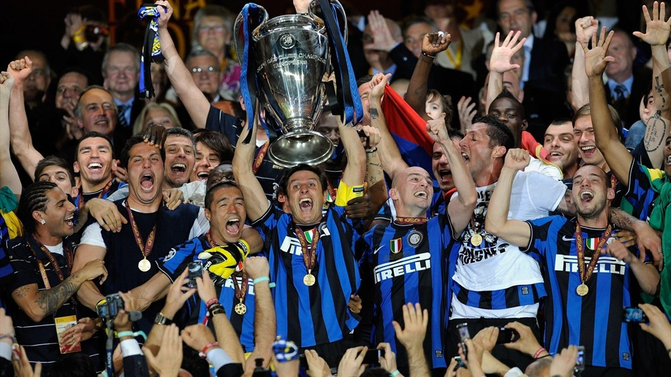
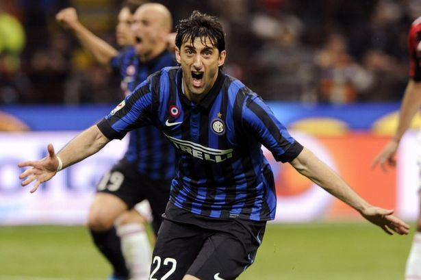

INFO
Football Club Internazionale Milano, commonly referred to as Internazionale or simply Inter and colloquially known as Inter Milan outside Italy, is an Italian professional football club based in Milan
, Lombardy. Inter is the only Italian club to have never been relegated from the top flight
.
Founded in 1908
following a schism within the Milan Cricket and Football Club (now A.C. Milan), Inter won its first championship in 1910
. Since its formation, the club has won 30 domestic trophies
, including 18 league titles, 7 Coppa Italia and 5 Supercoppa Italiana
. From 2006 to 2010, the club won five successive league titles
, equalling the all-time record at that time. They have won the Champions League three times
: two back-to-back in 1964 and 1965 and then another in 2010. Their latest win completed an unprecedented Italian seasonal treble, with Inter winning the Coppa Italia and the Scudetto the same year.The club has also won three UEFA Cups
, two Intercontinental Cups and one FIFA Club World Cup.
Inter's home games are played at the San Siro stadium
, which they share with local rivals A.C. Milan
. The stadium is the largest in Italian football with a capacity of 80,018. Matches between A.C. Milan and Inter, known as the Derby della Madonnina, are one of the most followed derbies in football. As of 2019, Inter has the higgest home game attendance in Italy and the sixth hightes attendance in Europe. The club is one of the most valuable in Italian and world football
.

2010 UEFA Champions League Final

Diego Milito